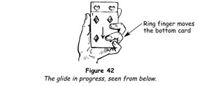

This sleight is one of the easiest and most useful to the card magician. In its original form it was used merely to substitute one card for another, but other excellent uses have evolved, some of which we shall describe. The basic action of the glide is this.
1. Hold a pack of cards face downwards in the left hand - the thumb at one side, the fingers at the other - its outer side pressing against the middle phalanx of the index finger, near the outer left corner, and the first (innermost) phalanx of the little finger. Rest the tip of the ring finger lightly against the middle of the face card. The third (outermost) phalanxes of the index and middle fingers are bent inwards but take no part in the action to follow.
2. Press backwards with the tip of the ring finger, forcing the bottom card back about 25 mm (1 in) and making it protrude beyond the inner end of the deck (figure 42). From above the cards appear to be in normal position, the protruding card being concealed by the back of the hand.

3. Bring the right hand palm upwards over to the deck, press its middle fingertip against the outer end of the second lowermost card, which is now exposed, and draw this card outwards about 25 mm (1 in), then seize and remove it with the aid of the thumb. Finally, move the left little finger backwards and with it press the protruding card flush with the deck.
A little practice will show that the sleight is an easy one to do, yet it must be performed smoothly and without looking at the hands.
To illustrate the uses to which the glide can be put, we shall describe first an extraordinarily effective trick known as Design for Laughter.
Design for Laughter
This is a trick in which the magician appears unknowingly to have made a mistake that ensures the failure of his feat. The more certain the spectators are of this, the more they enjoy his predicament and the more astonished and appreciative they are when the trick proves to be successful after all.
1. First shuffle the pack, then have a spectator choose a card freely. Have him show the card to everyone while you turn your head away. This is important, for all must know the card or they will not enjoy the feat. Next have the card replaced and control it to the top of the deck by means of the overhand shuffle control. Finally shuffle the chosen card to the bottom and leave it there.
2. Place the deck on the table before you and announce what you propose to do somewhat after this style. 'One of the most difficult feats with cards is that known as the location by cut. Let me show you what I mean.' Turn to the spectator who chose the card, saying, 'Will you assist me? I must make two conditions, however - first, that you will not at any time name your card or give me any indication that I have discovered it; second, that when you cut the cards, as I shall instruct you, you will say to yourself, “This I cannot fail to do.” That is an application to feats of skill with cards of the principles of eminent French psychologist Dr Coué. It is surprising that, when a person cuts with complete confidence, he will actually cut to a card which he has chosen and which has been shuffled into the pack.'
3. Gravely describe a circle around the deck with your extended index finger, then move your finger to make a cross above it. 'I now ask you to cut off about one-third of the cards as you say to yourself, “This I cannot fail to do.” Fine! Place the cut here.' Indicate that he is to place the packet to the right of the deck. 'Now cut off about half the remaining cards, using the same formula, and place them to the right of the first cut. Thank you.'
There are now three packets on the table and the chosen card is at the bottom of the left-hand packet.
4. Square the packets carefully and continue, 'There can be no doubt that you have cut at your card. However, I cannot know which of the cards is your card, so I must again ask you not to give me any indication by word or gesture as to which it may be.'
Pick up the right-hand packet face downwards in your left hand in position for the glide. Turn it so that the face card can be seen by everyone, glance at it and say, 'This is not your card.' Turn the packet face downwards, draw out the face card and place it face downwards at your right on the table. Drop the remainder of the packet on the right-hand packet of the two on the table.
5. Pick up this combined packet in the same manner, lift it to show the face card, look at it yourself and say, 'Nor is this your card.' Draw off the card and lay it face downwards beside the first tabled card.
6. Place the combined packet on the one remaining on the table, pick up all the cards, holding them ready for the glide, lift the pack and show the face card. It is the chosen card, but you keep a poker face and say as you execute the glide and remove the next card,
'Apparently you lack confidence in yourself, for that is not your card either.'
In spite of your previous instructions, someone may try to interrupt you at this point, for everyone sees that it is the chosen card. If so, take no notice and at once draw out the next card above the glided card and use it as a pointer. Touch each of the three tabled cards in turn counting. 'One, two, three cards and none of them yours.' Replace the pointer card on the face of the deck and lift the deck so that all can see it. This subtle move not only conceals the chosen card but finally convinces the onlookers that the chosen card has been placed on the table.
7. Turn to another spectator and ask him to name a number, say between five and ten. 'The chosen card will infallibly be at that number,' you say. Suppose seven is named. Still holding the deck face downwards, draw out the face card and deal it face upwards on the table, counting 'One.' Execute the glide and draw out the card above it, deal it on the table and count 'Two.' Continue to draw out and deal indifferent cards to the count of 'Six.' Then draw out the glided card and hold it face downwards, counting 'Seven.'
'Here is your card,' you say confidently. 'Will you now for the first time name your card?'
8. The spectator names the card you hold. Here is where your ability to act convincingly will be of prime importance. Pretend to be taken aback upon hearing the card named. Repeat its name and glance covertly at the card on the table which the spectators believe to be the chosen card.
Usually at this point someone, with no little glee, will tell you that the chosen card is on the table and that you have made a mistake. Occasionally, because of courtesy, no one will fall into the trap. In either case, after a moment you brighten and say, 'That's right. Here's the card!' Turn over the card you hold and show that it is the required card.
It is at this point that the trick is most enjoyable. You will find invariably that someone will reach for the tabled card, which should be, but is not, the chosen card. The laughter and puzzlement which this action provokes will repay you a hundredfold for the slight effort you have made in mastering the trick.
The Observation Test
The glide, as we have shown, is a useful sleight with which many effects can be had. This one enables you to vanish one card and make another appear in its place.
1. Shuffle the pack, have a card drawn and noted, and when it is replaced control it to the face of the pack by means of the overhand shuffle control.
2. Turn the pack with the face towards yourself, so that no one can see the cards, and run through them, removing the four two-spots and placing them at the face of the pack in black, red, black, red order. 'This is a test of your powers of observation,' you explain. 'I shall use the four two-spots to make the test.'
3. Remove the five cards at the face of the pack without showing how many you take. Turn them face downwards and hold them in the left hand in readiness for the glide. The top card is the chosen card and under it are the four two-spots.
4. 'I shall ask you to remember the sequence of the colours,' you continue. Remove the bottom card with the right hand and deal it face upwards on the table, calling its colour, 'Red.'
5. Deal the card now at the bottom face upwards on the first card in the same way. 'Black.'
6. Glide back the card now at the bottom. Remove the two cards above it as one by grasping them at the outer end between the right thumb, above, and the fingers, below. As they are drawn from the left hand, press against their sides with the left index finger and thumb, thus keeping the two cards in perfect alignment. Deal these two cards face upwards as one upon the first two cards, saying 'Black.' The cards should be dealt neatly one on top of the other.
7. Take the last card, saying, 'And this naturally must be red.' Show it, drop it face upwards on the other cards. You have shown four cards and all are two-spots. Pick them up, square them with the face towards yourself and mix the cards without revealing how many you hold. Be sure that the chosen card is third from the top when you finish. 'A good mixing,' you say, turning them face downwards. Take them in your left hand in readiness for the glide.
8. 'I'll do that again.' Repeat the actions from step 4 to step 6 and you will hold one card face downwards in your left hand. This is the chosen card.
9. Place it face downwards to your right. Pick up the other cards, place them on the pack and hold the pack in your hands. 'This is where I test your powers of observation,' you explain. 'You see, I made you think that you should observe the colour of the cards as I dealt the two-spots. That was a trick, for now I want you to tell me the suit of the last card.' As you say this, idly cut the pack, thus burying the other cards.
10. The spectators may succeed or fail in naming the proper two-spot, but no matter what their answer, you say, 'I'm sorry, but you were observing the colours so closely that you failed to notice the values on the cards.' Have the chosen card named, turn the card on the table face upwards and show that it is not a two-spot, but the chosen card.